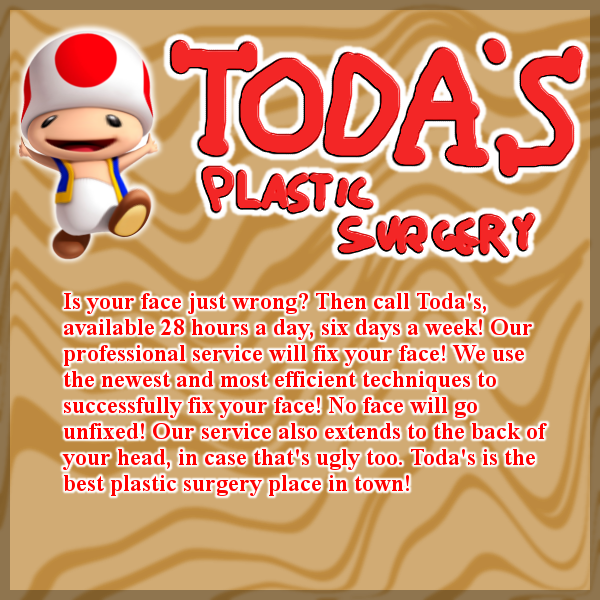

$5.00 | ~8 ghost dollars | ⭐25 coins
Does not include potential cost from surprise mechanics (they're not lootboxes so it's not illegal!!!), purchases from Shef Kerbi's Apparel or preordering the Special Edition
-------------------------
DREEM LEND SAVES INTERNET [NOT BLOCKED]
Over the last week, there has been some serious controversy going on the internet regarding the Dreem Lend government and DLTelecom's decision to block TBGchat due to a Pokémon chat that was created on that website. This article was written back in November 6th intended to be put into #36 before the events of last weekend occured:
In SKNN #32, we mentioned how we had beaten notorious chatroom CoPKMN in chat time, which back in 2016/17 had become an incredibly popular chatroom to the point where the Dreem Lend economy was negatively affected due to people taking work off to participate in CoPKMN.
Reports from the Planet Popstah's Global Financial Authority reported that economic activity in Dreem Lend had dropped 31% in the 2016-17 financial year compared to the previous financial year.
Recently, a new Pokémon chatroom was created on TBGchat which has concerned business owners across Dreem Lend. One independent business owner (whose gardening business I promise we're not going to buy after this report) had this to say:
Procedures are currently being put in place to determine whether or not a sustainable consumption of Pokémon chat can be maintained in Dreem Lend without significant financial consequences. We will report more on this issue when the news develops.
A couple of days later, DLTelecom announced that the TBGchat website would be blocked from Dreem Lend and that the ban would be done at the national level so that no Dreem Lend ISP could potentially allow people to get around it. Due to serious backlash, an impromptu press conference was held for media coverage and to allow the public to voice their opinion. Here were some questions from the press conference:
It's passed the threshold where the chat's too big to easily do that, and intruding inside that chat could be considered an unlawful act of privacy invasion from a government entity, which we don't want to be responsible for - DLTelecom Man
Personally from my perspective, I've been trying to prevent any sort of censorship rather than compromising, so I've been focusing my effort more on proving to the Dreem Lend government that Dreem Lend would not have this issue again. However, having some sort of "healthy work life balance" program could be helpful as a policy for all businesses to follow (yes I give out pink slips as payment but that deals with pay) - Shef Kerbi
yes - Everyone
After the press conference was held, DLTelecom and the Dreem Lend Government (Keyn DDDD) determined that blocking the TBGChat website should be handled by businesses rather than by the government. This has proven to be a win for the people in Dreem Lend who fought during the conference for the internet freedom route and succeeded.
As of the writing of this article, the Pokémon chat is currently near 1000 replies

OLD VERSION OF DIET WATER SONG FOUND
Someone searched through the Dreem Lend Music Archives and found an old gramophone record of a former version of the 'Diet Water Song' (the current version was on the former SKA page for Diet Bathwater during Collection 3 of it).
This is a restored version of the old one:
For comparison, here's the current version
ACTIVITE ANSWER
you die
THANK YOU FOR WATCH. PLEASE TUN E IN NEXT TIME FOR MORE NESW

Shef Kerbi News Network follows the guidelines and conventions set by the 1984 High Quality News Act of Dreem Lend, which states
that any news published is to be of a high quality, is to remain unbiased and to show all sides of a news report, does not attack anyone, and protects the privacy
of people whose identities don't want to be revealed.
If you would like to file a complaint regarding content use, please message SKNN through our Scratch account. We also have a Twitter and Instagram account if you
prefer.
Shef Kerbi News Network respects the ancestors of Cappy Town, and understands that they are the reason why Dreem Lend exists.
Shef Kerbi News Network is proud to be a subsidiary of Shef Werld
this website is best viewed with Ned's Escape